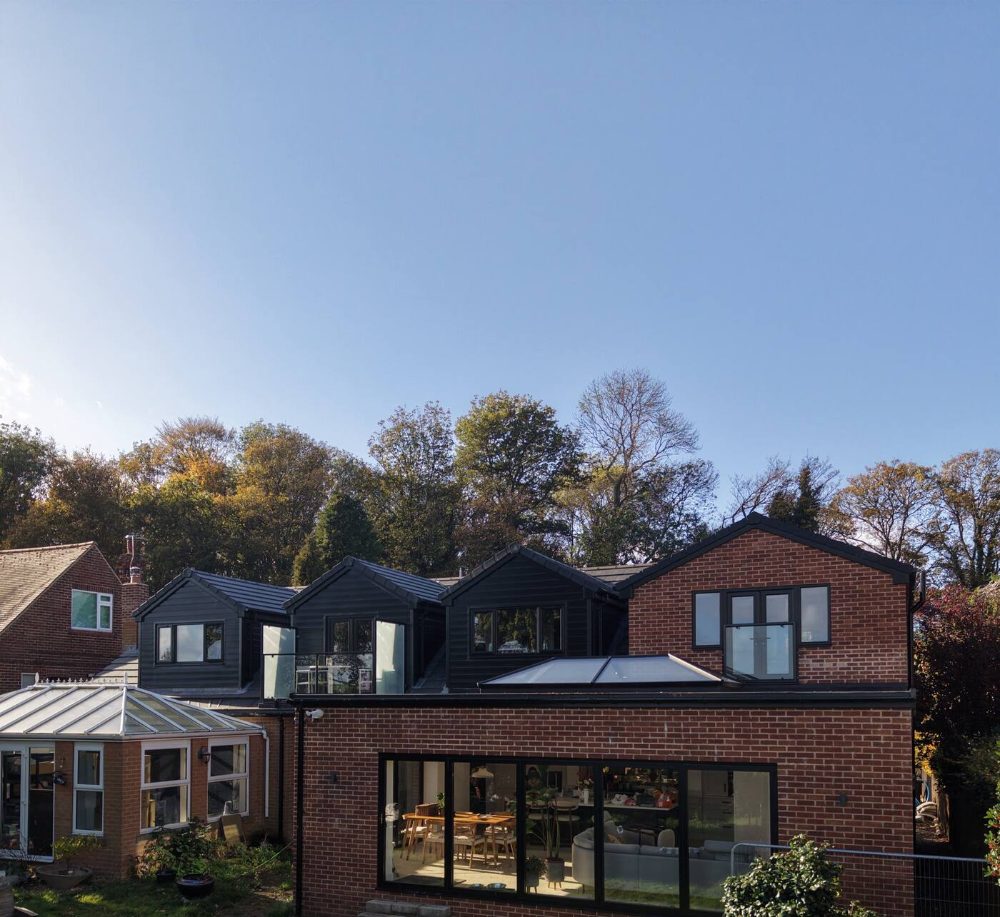

Rear Extension & Dormer Transformation
TypeExtension
Photos13
AreaBarnsley & South Yorkshire

About the project
We delivered a complete structural transformation, installing heavy structural steelwork and blockwork to form a spacious single-storey rear extension with large bi-fold doors and a roof lantern. Upstairs, we constructed multiple pitched roof dormers with dark cladding, modern glazing, and a glass Juliet balcony.